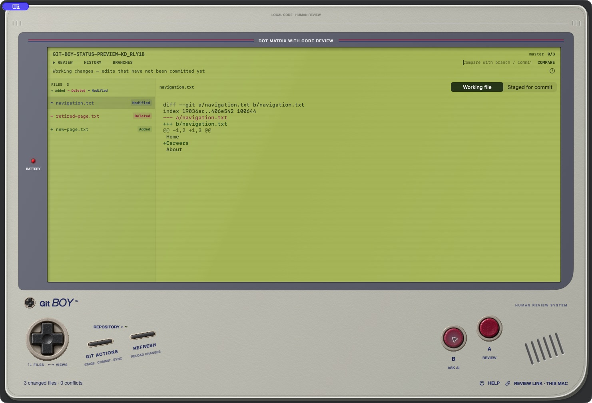

Read before you release.
Open a repository or a local review link. Color-coded files and staged or working diffs help you find your place.
INSERT REPOSITORY. TAKE CONTROL.
Git Boy is a free, open-source Git client for reviewing AI-generated code. Read diffs, understand what changed, and keep control of what you ship—with a native Mac app and an experimental Windows review client.
Get the Mac preview ↘Free to download. Early preview. Built for people who want to read their code again.

A CLOSER LOOK, ONE FILE AT A TIME
Open a repository or a local review link. Color-coded files and staged or working diffs help you find your place.
Highlight code, preview a prompt, then copy it into Codex or ChatGPT. You choose what to send and where.
Mark files as you read. The Mac app also includes Git actions, conflict editing, and a guided spotlight tour.
CHOOSE YOUR CONSOLE
Version 0.3.0 · Apple silicon
macOS 14 or later · Git required
Ad-hoc signed, not Apple-notarized. macOS may block opening it. A trusted signed installer is still in progress. No Intel build is offered yet.
SHA-256 checksumVersion 0.4.0-alpha.1 · x64
Git for Windows required
Unsigned preview. Manual Windows install/use testing is still outstanding. Supports reviewing diffs and AI prompts; staging, commits, sync, and conflict editing are not included yet.
Release notes and checksumsGit Boy reads local repositories. Ask AI prepares text for you to copy; it does not automatically send your code to a model. Local review links need the checkout on the computer opening them. Git operations you explicitly request can contact your configured remotes.
BEFORE YOU PRESS START
Yes. Git Boy is free to download, and its source is available on GitHub under the MIT license. No desktop account is required.
The native Mac preview requires Apple silicon and macOS 14 or later. The experimental Windows x64 client supports reviewing diffs, history, AI prompt copying, and local review links. Windows staging, commits, sync, and conflict editing are not available yet. Git must be installed on the computer.
No. Ask AI previews a prompt for you to explicitly copy into Codex or ChatGPT. Git Boy does not automatically call an AI service or transmit that prompt. You decide what to paste and send. Git operations you request can contact your configured remotes.
A local review link requires Git Boy and the repository at that path on the computer opening it. It does not upload the checkout or create a public code-sharing page. Use your Git hosting provider’s pull requests for shared remote reviews.
These are early previews. The Mac app is ad-hoc signed and not Apple-notarized. The Windows installer is unsigned, with manual Windows install/use/uninstall testing still outstanding. Review the release notes and checksums before downloading.
Use the GitHub issue queue. Include your operating system, Git Boy version, and steps to reproduce. Keep private code, credentials, and customer information out of public reports. The quickstart guide explains the Mac workflow.
NEXT IN THE QUEUE
This is an independent project inspired by vintage handhelds. It is not affiliated with Nintendo, Tower, OpenAI, or GitHub. Free and open source under the MIT license.